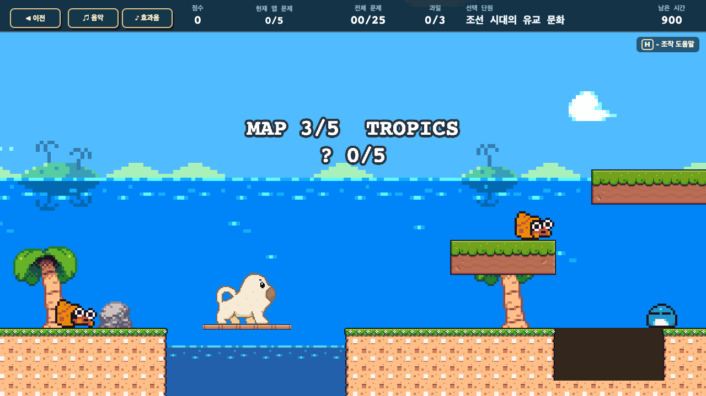
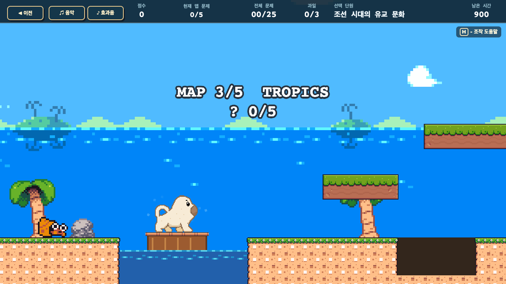

<!doctype html><html lang="ko"><meta charset="utf-8"><meta name="viewport" content="width=device-width, initial-scale=1"><title>HOJA 뗏목 수정 전후</title><style>body{margin:0;background:#102231;color:#f3f8fb;font:16px system-ui,sans-serif}main{max-width:1800px;margin:auto;padding:24px}h1{font-size:24px}section{display:grid;grid-template-columns:repeat(2,minmax(0,1fr));gap:16px}figure{margin:0;background:#1b3444;padding:12px}figcaption{font-weight:bold;margin-bottom:8px}img{width:100%;height:auto;image-rendering:pixelated}@media(max-width:700px){section{grid-template-columns:1fr}}</style><main><h1>열대 뗏목: 탑승 중 수정 전후</h1><p>같은 시드 314159의 첫 뗏목. 시험 위치는 유도했고 이후 탑승과 물리는 실제 게임에서 실행했습니다.</p><section><figure><figcaption>수정 전</figcaption></figure><figure><figcaption>수정 후</figcaption></figure></section></main></html>
